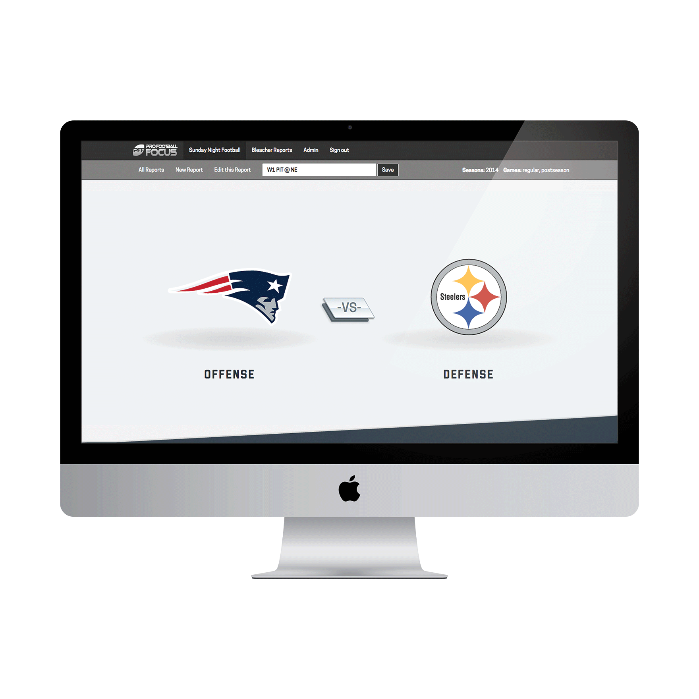
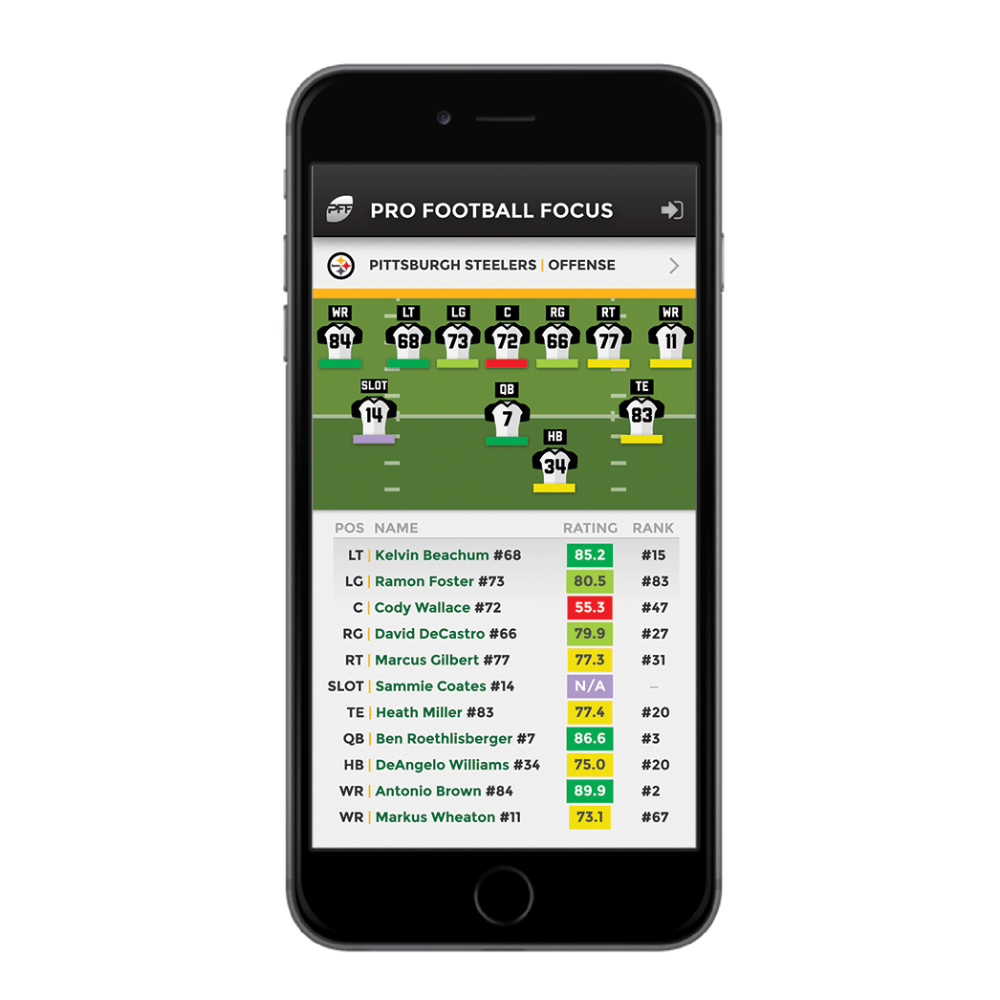

InVision Mock-Up

Our initial task was to channel the game data that Pro Football Focus provides to the production team of Sunday Night Football to drive commentary into an attractive infographic report that could be used digitally or even printed.
In order to accommodate any permutation of teams, we'd made use of a combination of maps in Sass and SVG to dispense with heavy raster images and just repaint jerseys and any team-identifying elements on the fly.
The team had managed to blast through the report app several weeks ahead of schedule. However, we'd been aware that they were looking to sunset one of their product offerings for football hobbyists in favor of something a little more streamlined. I put together some mocks to inspire interest, and we ultimately got the greenlight to implement it atop the reporting foundation and provided them with two products for the anticipated price of one.